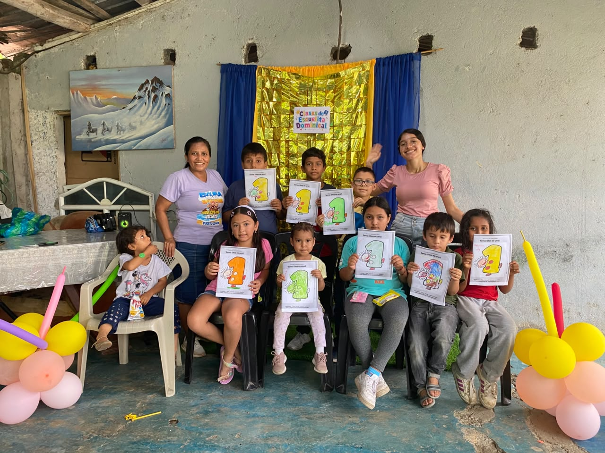

Estudiante de Ingeniería en Tecnologias de la Información
apasionada por el diseño, la tecnología y la creatividad. Aquí
encontrarás un poco de mi mundo: mis hobbies, mi fe y todo lo que
me inspira.
Bástate mi gracia; porque mi poder se perfecciona en la
debilidad. Por tanto, de buena gana me gloriaré más bien en mis
debilidades, para que repose sobre mí el poder de Cristo.
Sobre mí
Lo que me mueve
Me gusta el diseño, el desarrollo web, la fotografía y viajar.
También disfruto servir a Dios, porque es una parte muy importante
de mi vida. Siempre estoy aprendiendo cosas nuevas y buscando
formas de crecer tanto en lo personal como en lo profesional.
🎨
Diseño y Edicion
🌐
Desarrollo web
📸
Fotografía
🗺️
Viajes
🙏
Servicio a Dios
Me considero una persona creativa, responsable y siempre con ganas
de aprender. Disfruto asumir nuevos retos y seguir desarrollando
habilidades que me ayuden a crecer tanto en lo personal como en lo
profesional.
Galería
Un vistazo a mi mundo
Algunos momentos que me representan.
Diseñando
Uno de mis momentos favoritos: crear algo nuevo.
De viaje
Explorando lugares nuevos, cámara en mano.

En comunidad
Compartiendo mi fe y mi tiempo con otros.
Hobbies & habilidades
En mi tiempo libre...
Entre mis pasatiempos favoritos está el diseño web: me encanta ver
videos, aprender, crear páginas, practicar y jugar con colores
usando Canva.
🖌️
Diseño web
Creo páginas, experimento con colores y practico constantemente
usando Canva.
🎬
Edición de video
Edito y doy forma a videos, cuidando cada detalle visual.
📷
Fotografía
Me gusta capturar momentos y contar historias a través de
imágenes.
🎹
Piano
Tocar piano es uno de mis espacios favoritos para relajarme.
🖍️
Diseño gráfico
Diseño cosas nuevas todo el tiempo, dejando volar la
creatividad.
⛪
Predicar
Comparto mi fe predicando en la iglesia.
🎓 Carrera: Systems Engineering student
Vida activa
Deportes y aire libre
🧘 Yoga
🎾 Tenis
🏊 Natación
⚽ Fútbol
🏖️ Playa en familia
🌊 Río en Archidona
Kevin es muy diferente a mí
Aunque compartimos varios intereses, en los deportes somos
bastante distintos — y eso hace que siempre tengamos algo nuevo
que aprender el uno del otro, ya sea nadando en el río de
Archidona o jugando un partido de fútbol.
Fe & música
Lo que llena mi corazón
Escuchar música de adoración
Ir a la iglesia
Orar
Escuchar música
Leer la Biblia
Mi libro favorito
Videos cortos
Un poco de mí, en movimiento
Algunos momentos cortos que me representan.
Diseñando
De viaje
Tocando piano
En la iglesia
Con Pato
En el río
Tiempo libre
Así disfruto mis días
🦜
Pato, mi loro
Me encantan los animales, y Pato es parte de la familia.
🍳
Cocinar
Cocino, incluso en la iglesia, para compartir con otros.
📚
Enseñar
Enseño a jóvenes, algo que disfruto profundamente.
😴
Descansar
Un buen descanso siempre es bienvenido.
🌊
Ir al río
Uno de mis lugares favoritos para desconectar.
🏠
Quedarme en casa
A veces lo mejor es simplemente estar en casa.
Fe & música
Mujeres que inspiran mi caminar
Dos mujeres de fe y oración que han marcado mi vida espiritual:
una predicación que admiro profundamente, y una canción que se ha
vuelto parte de mis momentos de adoración.
Hna. María Luz de Galvis
Admiro mucho su disciplina para la oración y su dedicación al
servicio de Dios. Sus enseñanzas han sido de bendición para mi
vida y espero que este mensaje también pueda serlo para ti.
Sin tu amor
Esta canción se ha vuelto parte de mis momentos de adoración.
Espero que su letra también hable a tu corazón. Interpretada por
la Hna. Roxana Sucuy, una mujer de fe y de oración — la autoría
original de la canción no le pertenece, pero amo cómo la canta.
¿Tienes preguntas?
Gracias por conocer un poco más sobre mí. Si quieres conectar o
conversar, no dudes en escribirme.